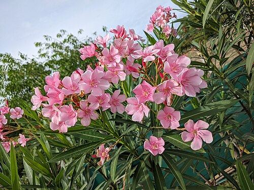
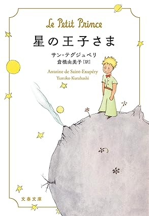

八月十五日、この日女子挺身隊員として、呉軍港に近い広町にいました。 聞きとりにくいラジオで判った事は日本が降伏したと云う事でした。 暑い日差しの中、夾竹桃が咲いていました。 疲れ切った躰に、頭に、家に帰れると云う思いだけがありました。
八月六日、広島に投下された原子爆弾を見たのは、直線で25キロ位の地点だったと思います。 白く見えたB29、一瞬の閃光、わた菓子のようなピンク色した茸雲(キノコくも)、朝からの空襲で避難していた工場の裏山から見ていた事を鮮やかに思い出されます。 しばらくは新型爆弾の名も判らずピカドンと呼ばれていました。 その恐ろしい爆弾でたくさんの知人や級友が亡くなっていた事も、後遣症で大変な事になろうともしらず、命を共にした友と別れ、萎んだ風船のようになって帰郷、田舎も食糧不足、買い出しに行かなければ生きられなかった日々、物物交換・新圓切替・衣料切符と、思い出すのさえ切ない明け暮れでした。
私が体調をくずし入院したあれから十年後、広島の日赤はまだ後遺症の病人で一杯でした。 あの日のピカの黒い雨に打たれた幼女が、中学生になる夢を抱きながら新しいカバンを枕頭に白血病で帰らぬは人となりました。 解部の結果、内臓は襤褸(ボロ)雑巾のようになっていたそうです。 泣けて泣けて仕方がありませんでした。 戦争のむごさと空しさを泌泌(しみじみ)感じました。 その後も他界する人が続き、日赤に隣接して原爆病院が出来たのもこの年で、患者は移されて行きました。
振り返って見ると五十年、ピカドンの広島もすっかり様変りして、目を閉じても見えていた並木通りや町のたたずまいが見知らぬ町になっていました。 今年も夾竹桃が咲きました。 広島でも咲いていることでしょう。 死体で埋まったといわれる川は今も流れ、六十年位は草も生えまいと云われたものでしたが、爆弾投下の中心地平和公園の木々は成長しました。
平和と安らぎを願う人間をよそに今も、あちこちで悲惨な戦いのある事に胸が痛みます。 今又、フランス・中国が核実験云々、許せない事です。 「どうしてもしたければ、自国の上空から投下しろ」と、国々のしかも一部の権力者達の犠牲に、一般の人間を巻き込まないで呉れと叫びたい。
「国境や民族の事で目くじら立てないで仲良く出来ないものだろうか」と思うのです。 宮沢賢治の詩のように、西に飢える人あれば食物を廻し、東に病気がはやれば医療に携わる人は飛んで行き、助け合い、人を疑わず、武器を造らず、争わず、驕(おご)らず、優しさを忘れず、手と手を繋ぎ合って、地球を守り、平和に向かって地球人として生きたいと希ふものです。
夾竹桃(キョウチクトウ)葉がタケのように細く、花がモモに似ていることから「夾竹桃」と中国名で呼ばれる低木です。

キョウチクトウの葉、花、根に、周辺の土に、燃やして出た煙にも毒性があります。
しかし乾燥や公害などの大気汚染に強いため、工業地帯や市街地緑化の街路樹や公園樹などに利用され、燃えにくく火に強いため防火樹としても役立っています。
また毒性のお陰で、有害な昆虫とか小動物、毒蛇などを別の場所に追いやってくれるというメリットもあります。広島市はかつて原爆で75年間草木も生えないといわれたが、被爆焼土にいち早く花を咲かせ人々の心に希望と勇気を与えた、として原爆からの復興のシンボルとなり広島市の花に指定された。
引用: ウィキペディア（Wikipedia）キョウチクトウ
反戦

地球は
先祖から受け継いでいるのではない、
子供から借りたものだ。
You do not inherit the earth from your ancestors:
you borrow it from your children.サン＝テグジュペリ（フランスの作家）の言葉